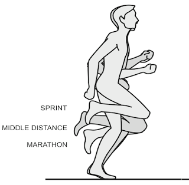

PULL是「上拉」還是「拉回」？
這兩天又跟羅曼諾夫博士重新學習跑步技術，每次同樣的東西重新學習都會有不同的啟發，這些啟發中最大的改變是跑者做出優秀動作時他本身的「知覺」和「動作」上的差異。

有位學員問：「博士，投影片中PULL翻譯成『上拉』，但你要我們快點拉回關鍵跑姿，所以是否翻成『拉回』比較好？」
博士回覆：「不，對跑者的知覺來說，還是『上拉』，如果跑者在跑步的過程中感覺到『拉回』時代表已經太遲了。我們從旁觀者的角度來看優秀跑者的動作，他的確是把留在身體後方的腳掌拉回臀部下方來，但對跑者本身的知覺來說，腳掌是直上直下的。」
這個回覆讓我晃然大悟。我過去在教學時實在不該教「拉回」，而是應該要求跑者「上拉」就好，慢跑時上拉只到腳踝，節奏跑時上拉到小腿，衝刺跑時拉到接近臀部的高度。
【附圖】摘自羅曼諾夫博士POSE METHOD上課投影片，說明上拉高度跟速度有關。
這就像不少頂尖的自由式選手都曾在訪問時說過自己只是在直接把手臂往後划，但當攝影機從水底拍攝時卻都一致都是S形軌迹。但如果在練游泳時只是刻意模仿頂尖選手的S形划手，手掌與前臂在水中的支撐反而會不穩，而會失去划手的效率。
對於跑者也是一樣，只要在跑步的過程中已經意識到要「拉回」就代表已經有某些地方做錯了，例如腳往前跨、肩膀往前傾、坐著跑、主動落地或主動推蹬等。在接近正確跑姿的意識裡：腳掌都一直在臀部正下方直上直下的移動。而且過度刻意的拉回，反而會容易使腳掌跑到臀部前方，造成過度跨步。
跑者要專注的知覺是「上拉」，「拉回」的只是動作外觀的描述。這個觀點對我在教與學的方法上，實在有莫大的啟發。
這次的北京之旅，在博士、文彥、Hank和其他同學的提問與指正下，才有機會認清「內在知覺」與「外在動作」的差別，這對我在教/學上的幫助很大，以此短文跟大家分享。也藉此修正之前的錯誤用語。